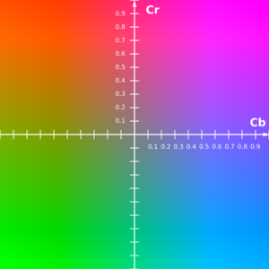

色彩空间
色彩空间在物体追踪、特征检测等（简单来说就是识别一个东西）扮演着很重要的角色。毕竟每个物体都有特定的颜色和特征，我们可以应用其物体与环境颜色上的差异，从图像中提取特定范围的颜色并加上一些逻辑性的判断，获取待检测物体的位置。颜色
上图可见的是一些常见的颜色，我们人眼一看并可辨认是什么颜色。但是在计算机信息上，我们该如何去定义或描述这些颜色呢？这就是颜色空间的作用了。不同的颜色空间以不同的方式去定义各个颜色，同样的颜色在不同的颜色空间有着不同的值，这是因为每一个颜色空间都有不同的性质。以下我们讨论并比较颜色空间在图像分割上的一些性质。不同的色彩空间
在本节中，我们将介绍计算机视觉中使用的一些重要色彩空间。我们不会描述它们背后的理论，因为可以在Wikipedia上找到它。相反，我们将发展一个基本的直觉并学习一些重要的属性，这些属性对于以后的决策很有用。让我们加载2个相同立方体的图像，如下所示。默认情况下，它将以BGR格式加载。
Mat bright = imread("cube1.jpg");
Mat dark = imread("cube8.jpg");
两张在不同明亮度拍摄的魔方照片
下面我们要从不同的颜色空间分析这例子图像的颜色性质。从常用到非常用，我会介绍：
- BGR颜色空间(RGB)
- HSV颜色空间
- Lab颜色空间
- YCrCb颜色空间
我们可以使用OpenCV函数cvtColor()在不同的色彩空间之间进行转换。例：
cv::cvtColor(input_img, output_img, cv::COLOR_BGR2LAB); //从BGR转LAB
cv::cvtColor(input_img, output_img, cv::COLOR_BGR2HSV); //从BGR转HSV
cv::cvtColor(input_img, output_img, cv::COLOR_BGR2YCrCb); //从BGR转YCrCb
BGR色彩空间
我制作了个简单的颜色拉条，可以手动尝试每个颜色通道对颜色的关系。 BGR色彩空间具有以下属性
BGR色彩空间
- 它是一种加色空间，其中颜色是通过红色，绿色和蓝色值的线性组合获得的。
- 这三个通道与撞击表面的光量相关。
取值范围
在OpenCV中，BGR的取值范围(默认的CV_8U格式)为：0 >= B >= 255某个通道的值越高，代表那个性质是越高的，反之亦然。如，R通道的值越高，那个像素颜色就越红。
0 >= G >= 255
0 >= R >= 255
让我们将两个图像的B，G和R通道分离，然后观察。
RGB色彩空间的不同通道蓝色（B），绿色（G），红色（R）分别显示
观察结果
如果你查看蓝色通道，可以看到在室内照明条件下，第二张图像中的蓝色和白色部分看起来相似，但是第一张图像中有明显的不同。这种不均匀性使得在这种颜色空间中基于颜色的分割非常困难。此外，两个图像的值之间存在整体差异。下面我们总结下与RGB颜色空间相关的固有问题：- 严重感到不一致性。
- 色度（颜色相关信息）和亮度（强度相关信息）数据的混合。
HSV色彩空间
HSV颜色空间具有以下三个组成部分

- H – 色相（主波长）。
- S – 饱和度（纯度/颜色阴影）。
- V – 值（强度）。
- 好事是，它仅使用一个通道来描述颜色（H），从而非常直观地指定颜色。
- 取决于设备。
取值范围
在OpenCV中，HSV的取值范围(默认的CV_8U格式)为：0 >= H >= 360 ⇒ OpenCV range = H/2 (0 >= H >= 180) 0 >= S >= 1 ⇒ OpenCV range = 255*S (0 >= S >= 255) 0 >= V >= 1 ⇒ OpenCV range = 255*V (0 >= V >= 255)这两个图像的H，S和V分量如下所示。
analysis_hsv.cpp
...
Mat brightHSV, darkHSV;
// 转换颜色空间
cvtColor(bright, brightHSV, COLOR_BGR2HSV);
cvtColor(dark, darkHSV, COLOR_BGR2HSV);
Mat bright_hsv[3];
split(brightHSV, bright_hsv); // 通道分离
Mat dark_hsv[3];
split(darkHSV, dark_hsv); // 通道分离
String c[3] = {"H", "S", "V"};
for (int i=0; i<3; i++) {
imshow("bright " + c[i], bright_hsv[i]);
}
for (int i=0; i<3; i++) {
imshow("dark " + c[i], dark_hsv[i]);
}
waitKey(0);
destroyAllWindows();
...
HSV颜色空间中的色相（H），饱和度（S）和值（V）分量
观察结果
两个图像中的H分量非常相似，这表明即使在光照变化下颜色信息也完整无缺。在两个图像中，S分量也非常相似。
V分量捕获落在其上的光量，因此由于照明的变化而发生变化。
室外红色图像和室内图像的红色值之间存在巨大差异。这是因为色相H为轮（0度到360度），红色表示起始角度。因此，它可能取[300，360]到[0，60]之间的值。
LAB颜色空间
Lab颜色空间包含三个组成部分。
LAB色彩空间
- L –亮度（强度）。
- a –颜色成分，从绿色到洋红色。
- b –颜色成分，从蓝色到黄色。
它具有以下属性。
- 感知均匀的色彩空间，近似我们对色彩的感知方式。
- 与设备无关（捕获或显示）。
- 在Adobe Photoshop中广泛使用。
- 通过复杂的转换方程与RGB颜色空间切换。
取值范围
在OpenCV中，Lab的取值范围(默认的CV_8U格式)为：0 >= L >= 100 ⇒ OpenCV range = L*255/100 (1 >= L >= 255) -127 >= a >= 127 ⇒ OpenCV range = a + 128 (1 >= a >= 255) -127 >= b >= 127 ⇒ OpenCV range = b + 128 (1 >= b >= 255)让我们查看Lab颜色空间中的两个图像，这些图像分为三个通道。
analysis_lab.cpp
...
Mat brightLAB, darkLAB;
// 转换颜色空间
cvtColor(bright, brightLAB, COLOR_BGR2LAB);
cvtColor(dark, darkLAB, COLOR_BGR2LAB);
Mat bright_lab[3];
split(brightLAB, bright_lab); // 通道分离
Mat dark_lab[3];
split(darkLAB, dark_lab); // 通道分离
String c[3] = {"L", "a", "b"};
for (int i=0; i<3; i++) {
imshow("bright " + c[i], bright_lab[i]);
}
for (int i=0; i<3; i++) {
imshow("dark " + c[i], dark_lab[i]);
}
waitKey(0);
destroyAllWindows();
...
LAB颜色空间中的亮度（L）和颜色分量（A，B）。
观察结果
从图中可以很明显地看出，亮度的变化主要影响了L分量。包含颜色信息的A和B组件没有发生大的变化。
在两图中，绿色、红色和橙色在B值上区别不大（而在A值上却是极端），蓝色和黄色在A值上区别不大（而在B值上却是极端）
YCrCb颜色空间
YCrCb颜色空间是从RGB颜色空间派生的，并且具有以下三个组件。
YCrCb颜色空间
- Y – 伽玛校正后从RGB获得的亮度或亮度分量（Lumaninance，Luma）。
- Cr = R – Y（红色值距离Luma的多远）。
- Cb = B – Y（蓝色值距离Luma的多远）。
此色彩空间具有以下属性。
RGB转换成YCrCb的方程
- 将亮度和色度分量分成不同的通道。
- 通常用于电视传输的压缩（Cr和Cb成分）。
- 取决于设备。
analysis_ycrcb.cpp
...
Mat brightYCrCb, darkYCrCb;
// 转换颜色空间
cvtColor(bright, brightYCrCb, COLOR_BGR2YCrCb);
cvtColor(dark, darkYCrCb, COLOR_BGR2YCrCb);
Mat bright_ycrcb[3];
split(brightYCrCb, bright_ycrcb); // 通道分离
Mat dark_ycrcb[3];
split(darkYCrCb, dark_ycrcb); // 通道分离
String c[3] = {"Y", "Cr", "Cb"};
for (int i=0; i<3; i++) {
imshow("bright " + c[i], bright_ycrcb[i]);
}
for (int i=0; i<3; i++) {
imshow("dark " + c[i], dark_ycrcb[i]);
}
waitKey(0);
destroyAllWindows();
...
YCrCb颜色空间中的亮度（Y）和色度（Cr，Cb）分量
观察结果
和LAB一样，亮度Y会受到光线影响，而颜色成分Cr和Cb不会受到光线影响。与LAB相比，即使在室外图像中，红色和橙色之间的感知差异也较小。
白色在三个颜色通道有不一样的值。
灰度图(Grayscale)
单通道图像我们称为灰度图。它只包含图像的光度信息，并没有颜色信息。所以我们在显示灰度图时一定是只有“灰色”。我们可以一样使用cvtColor变换图像成灰度图。常用的用法为：
cvtColor(img, gray, COLOR_BGR2GRAY);
我们也可以在读取图像时先“下手为强”。可以在第二个参数填上IMREAD_GRAYSCALE或0，将会返回一个单通道灰度图。用法：img = imread("path/to/img.jpg", IMREAD_GRAYSCALE);
取值范围
在OpenCV中，灰度图的取值范围(默认的CV_8U格式)为：0 ~ 255